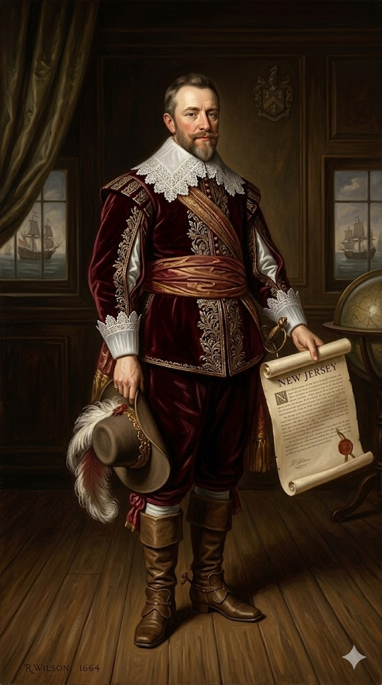
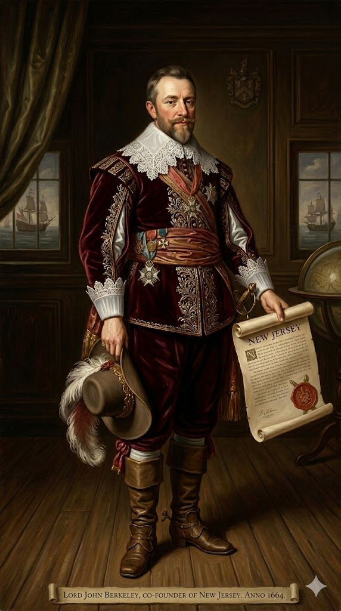
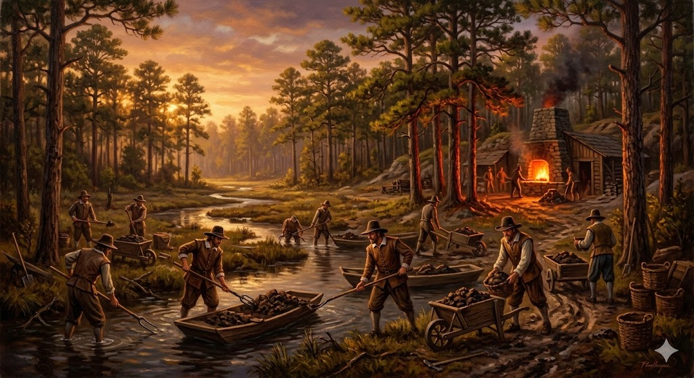

1. שנות פעילות, הקמה ויעדים
שנת הקמה: 1664 (מיד לאחר הכיבוש האנגלי של "הולנד החדשה" מידי פטר סטויווסאנט).
ישות מקימה: מושבה קניינית (Proprietary colony). לאחר שג'יימס, דוכס יורק (אחיו של המלך), קיבל לידיו את שטחיה העצומים של ניו יורק מידי ההולנדים, הוא החליט "לחתוך" נתח אדמה פורה במיוחד ולהעניק אותו במתנה לשניים מחבריו הקרובים ביותר, שעזרו למשפחת המלוכה לשרוד בגלות קשה במהלך מלחמת האזרחים האנגלית.
היעדים המקוריים (נדל"ן נטו): המטרה של צמד הבעלים הייתה אך ורק כלכלית. הם לא רצו להקים עיר אלוהים כפי שרצו הפוריטנים במסצ'וסטס, ולא מקלט אידיאולוגי כפי שרצו הקתולים במרילנד. הם התייחסו לניו ג'רזי כאל פרויקט עסק נדל"ן ענק: להביא כמה שיותר מתיישבים במהירות האפשרית, כדי לגבות מהם דמי חכירה שנתיים קבועים ורווחיים מאוד (Quitrents). כדי להשיג זאת מהר, הם פרסמו מניפסט שיווקי מתקדם ביותר לזמנו שהציע חופש יוצא דופן.
2. רקע המייסדים: האצילים המפוצלים

סר ג'ורג' קרטרט (Sir George Carteret) (1610–1680)
רקע והישגים: קצין ימי ופוליטיקאי אנגלי נאמן וחסר פשרות. במהלך מלחמת האזרחים האנגלית, בעוד המלוכה קורסת ואנשי הפרלמנט עורפים את ראשו של המלך צ'ארלס הראשון, קרטרט שימש כמושל האי הצרפתי/בריטי ג'רזי (Jersey) הממוקם בתעלת למאנש.
הוא סיפק במבצרו שעל האי מקלט בטוח לנסיך צ'ארלס (לימים המלך צ'ארלס השני) שברח מאוליבר קרומוול. כהוקרה על הצלת חייו והגנת האי בחירוף נפש מול הכוחות המורדים, העניק לו המלך עם חזרתו לשלטון נחלה רחבה באמריקה וקרא לה על שם אותו אי גיבור (New Jersey). בחלוקה הפנימית של המושבה, קרטרט קיבל את חלקה המזרחי ("East Jersey"), הקרוב יותר לניו יורק, שהתאכלס בעיקר על ידי פוריטנים.

לורד ג'ון ברקלי (John Berkeley) (1602–1678)
רקע: אציל אנגלי, דיפלומט וחייל מצביא, שהיה גם שותף בכיר (Lords Proprietor) במושבת קרוליינה יחד עם הלורד אשלי קופר. ברקלי קיבל מהדוכס מיורק את חלקה המערבי של המושבה החדשה ("West Jersey"), אזור המגביל לנהר הדלאוור.
אולם, חייו באנגליה לא היו פשוטים והוא סבל מקשיים כלכליים קשים. ב-1674, מרוב תסכול מכך שהאיכרים והמתיישבים ההולנדים והפוריטנים בניו ג'רזי פשוט סירבו לשלם לו את מיסי החכירה שלו (Quitrents) והתמרדו, הוא החליט לעשות מעשה דרסטי: הוא מכר את כל חצי המדינה שלו לקבוצת קווייקרים אנגלים (ביניהם הצעיר העולה, ויליאם פן), באירוע חסר תקדים ששינה את ההיסטוריה הדמוגרפית של האזור והפך את מערב ג'רזי למעוז של סובלנות עוד לפני הקמת פנסילבניה.
3. אידאולוגיה: מסמך ה"זיכיונות וההסכמות"
המייסדים האצילים הבינו במהרה שהם לא יכולים להביא מתיישבים לאזור שכבר יושב חלקית על ידי הולנדים ושבדים, מבלי להציע תמריצים קיצוניים שיפתו אנשים לקום ולעבור לשם. לשם כך, הם פרסמו את מסמך הזיכיונות וההסכמות (Concessions and Agreements) ההיסטורי של שנת 1665.
- חופש דת כטריק פוליטי: המסמך הבטיח חופש דת מוחלט לכל מתיישב. זו לא הייתה החלטה מוסרית טהורה ואצילה (כפי שהייתה אצל רוג'ר ויליאמס ברוד איילנד), אלא טריק שיווקי עסקי. וזה עבד בצורה יוצאת דופן: פוריטנים ממסצ'וסטס שהרגישו שהחוקים שם מחמירים מדי, קווייקרים נרדפים שחיפשו מקלט, וקבוצות של בפטיסטים - נהרו כולם לניו ג'רזי בגלל ההבטחה הזו, ויצרו חברה מגוונת להפליא.
- אסיפה מחוקקת עצמאית: בנוסף לחופש הדת, הובטחה למתיישבים הזכות הדמוקרטית להקים אסיפה כללית שתקבע בעצמה את חוקי המקום ואת המיסים. זה יצר ציפייה לדמוקרטיה מלאה בקרב העם, ציפייה שהתנגשה מאוחר יותר חזיתית עם רצונם העריץ של הבעלים בלונדון לגבות דמי חכירה כפויים.
4. גיאוגרפיה: המסדרון בין שתי מעצמות עירוניות
ניו ג'רזי מוגדרת כמעט כולה על ידי המים המקיפים אותה, אך למרבה האירוניה הגיאוגרפית, תצורה זו מנעה ממנה להפוך למעצמת סחר עולמית בעצמה:
- גבולות הידרולוגיים עצומים: ממזרח היא תחומה על ידי נהר ההדסון האדיר והאוקיינוס האטלנטי, וממערב היא תחומה לכל אורכה על ידי נהר הדלאוור. האדמה שהייתה כלואה בין שני הנהרות העצומים האלו הייתה חקלאית ופורייה מאוד (אדמות שפלה לחות ומישורים עשירים).
- "החבית ששותים ממנה בשני הקצוות": בנג'מין פרנקלין תיאר מאוחר יותר את ניו ג'רזי כ"חבית ששואבים ממנה משני הקצוות". למרות שיש לה חוף עצום, לניו ג'רזי לא היה אף נמל מים עמוקים מוגן משלה שיכול היה להתחרות בשכנותיה הגדולות. כתוצאה מכך, כל הסחר, הייצוא וההון של החצי המזרחי (East Jersey) נשאב ישירות אל נמל ניו יורק (ההדסון), וכל הסחר של החצי המערבי (West Jersey) נשאב אל העיר פילדלפיה (על נהר הדלאוור) שקמה בהמשך. ניו ג'רזי נותרה למעשה אזור מעבר יבשתי מהיר ומסדרון אספקה חקלאי חיוני שפיטם והעשיר את שתי הערים הגדולות הללו, בעוד היא עצמה נשארה כפרית ויצרנית.
5. כלכלה: סל הלחם ותעשיית ברזל הביצות

כלכלת ניו ג'רזי הייתה מגוונת, יצרנית להפליא, ופיצתה בצורה מושלמת על היעדר נמל מסחרי עולמי משלה:
- כלכלת דגנים ("Breadbasket Colony"): ניו ג'רזי, יחד עם שכנותיה פנסילבניה וניו יורק, זכתה לכינוי ההיסטורי "מושבות סל הלחם". האדמה הפורייה שלה הייתה מתאימה בצורה פנומנלית לגידול נרחב של חיטה, שיפון ותירס. החקלאים המקומיים ייצאו את עודפי הקמח האדירים שלהם לערי הנמל הסמוכות, ומשם לקריביים (כדי להאכיל את מיליוני העבדים במטעי הסוכר) ולמושבות הצפוניות הקרות והרעבות.
- תעשיית ברזל הביצות (Bog Iron): משאב טבעי מפתיע וייחודי לניו ג'רזי היה אזור "מחטי האורנים" העקר (The Pine Barrens) בדרום המדינה. למרות שהאדמה שם לא התאימה לחקלאות, במקורות המים והביצות שם נמצא "ברזל ביצות" – משקעי ברזל טבעיים נקבוביים שניתן היה לכרות בקלות יחסית. בשילוב עם מיליוני העצים שסיפקו פחם זמין וזול להסקת הכבשנים, הפכה ניו ג'רזי במהירות לאחד המרכזים הראשונים והחשובים ביותר לתעשיית המתכת (ייצור מסמרים, פרסות, כלי עבודה, ומאוחר יותר תחמושת ותותחים עבור צבאו של ג'ורג' וושינגטון במלחמת העצמאות) באמריקה הקולוניאלית.
6. דמוגרפיה: פסיפס של עמים ודתות
הדמוגרפיה של ניו ג'רזי הייתה ללא ספק המעורבת והעשירה ביותר מכל 13 המושבות בעשורים הראשונים להקמתה, פועל יוצא ישיר של הבטחת חופש הדת המוחלט ופיצול הבעלות על הקרקע:
- הירושה ההולנדית והשוודית: לפני הגעת האנגלים העוינים ב-1664, השטח הגיאוגרפי של ניו ג'רזי (בעיקר בצפון המזרחי סביב נהר ההדסון) כבר היה מיושב בצפיפות על ידי איכרים הולנדים, וגדות נהר הדלאוור יושבו על ידי שוודים ופינים מתקופת "שוודיה החדשה". אזרחים אלו נשארו במקומם גם תחת השלטון האנגלי וגידלו משפחות ענפות ודוברות שפות זרות.
- הפלישה האנגלית הכפולה (מזרח ומערב): במזרח ג'רזי התיישבו בעיקר פוריטנים קשוחים שירדו דרומה ממסצ'וסטס וקונטיקט, לצד אירים סקוטים עניים שהובאו לאמריקה כמשרתים. מנגד, במערב ג'רזי (שכאמור, נמכרה לקווייקרים) התיישבו אלפי קווייקרים אנגלים שהפכו את האזור למרכז של שוויון עממי והתנגדות ראשונית לעבדות. כתוצאה ממארג זה, לא הייתה לניו ג'רזי שום "דת מדינה" מובהקת או ממסד אחיד שיכל להשתלט עליה ולכפות את ערכיו.
7. מאבקי השליטה: הכאוס המפוצל והשתלטות המלכה
ההיסטוריה השלטונית והפוליטית של ניו ג'רזי היא מרובת מחלוקות, מרידות משפטיות וכאוס עממי, שסופן במחיקת הבעלות הפרטית והפיכתה למושבת כתר מלאה:
איחוד בכפייה תחת הכתר (Royal Colony)
- מועד הפיצול והאיחוד: המושבה חולקה רשמית ל"מזרח ג'רזי" (אחוזתו של קרטרט) ו"מערב ג'רזי" (הנחלה הקווייקרית) בשנת 1676. מצב של כאוס ופיצול פוליטי זה נמשך כמעט שלושה עשורים, עד ל-1702, אז אוחדה המושבה מחדש בעל כורחה.
- אישים בולטים במאבק: מושל ניו יורק הדורסני סר אדמונד אנדרוס (שניסה להשתלט על ניו ג'רזי בכוח צבאי וגבה מיסים לא חוקיים מהמתיישבים), והמלכה החזקה אן (Queen Anne) מאנגליה שחתמה במו ידיה על פקודת האיחוד.
- סיבת ההשתלטות: אדמות גנובות ומרידות עממיות: הכאוס האדיר בניו ג'רזי נבע מבעיה משפטית מטופשת אך הרסנית. כאשר מושל ניו יורק כבש במקור את האזור מההולנדים, הוא העניק אישור מהיר למתיישבים פוריטנים לקנות אדמות באופן ישיר משבט הלנאפה האינדיאני. אולם, כמה שבועות לאחר מכן, דוכס יורק (הפטרון שלו) נתן את *כל* השטח העצום הזה במתנה לקרטרט וברקלי בלונדון. הפיצוץ היה בלתי נמנע. כאשר האצילים החדשים של ניו ג'רזי ניסו לגבות מס חכירה (Quitrents) על האדמות הללו, המתיישבים העקשנים צחקו להם בפנים, נופפו בחוזים הישנים שחתמו מול האינדיאנים וטענו "האדמה שייכת לנו כדין". הדבר הוביל לעשרות שנות מהומות אלימות, בתי משפט משותקים, וסירוב מוחלט לתשלום מיסים לממשל (אירועים שזכו לשם ההיסטורי The Quitrent Riots). הבעלים השונים והמתוסכלים של מזרח ומערב ג'רזי איבדו שליטה לחלוטין על האזרחים המורדים, פשטו את הרגל בשל חובות, והגישו לבסוף בשנת 1702 את זכויות השלטון והמשפט שלהם חזרה לידי הכתר הבריטי (המלכה אן) מרוב ייאוש ותסכול. ניו ג'רזי אוחדה והפכה למושבת כתר מלכותית יציבה שמנוהלת על ידי מושל מטעם המלכה.
8. מחקר אטימולוגי: מ-Caesarea אל האי של גייר
Nova Caesarea (נובה קיסריה)
מקור: לטינית עתיקהזהו השם הרשמי והראשון שהופיע בכתב הזיכיון של המושבה ב-1664 (והוא עדיין מופיע על החותם הרשמי של המדינה כיום). המקור הוא השם הלטיני העתיק לאי Jersey הממוקם בתעלת למאנש. הרומאים שכבשו את האזור קראו לאי במקור "Caesarea" (על שם התואר הקיסרי - Caesar / יוליוס קיסר). באנגלית מדוברת ויומיומית, התרגום הישיר של המושג הלטיני הזה הוא פשוט "New Jersey".
Jersey (ג'רזי)
מקור: נורדית עתיקה (ויקינגית)למרות המקור הלטיני-רומי הקלאסי של השם הכתוב, חוקרי שפות ואטימולוגים מאמינים כי השם המדובר (ג'רזי) עבר למעשה התאמה ויקינגית. כאשר הוויקינגים מהצפון שלטו באיי התעלה סביב המאה ה-9, השם התפתח מהשורש הנורדי Geirr (שם אדם ויקינגי נפוץ מאוד בתקופה, שפירושו הלוחמני הוא "חנית") + התוספת ey (שמשמעותה פשוט "אי" בשפה הנורדית העתיקה). כלומר, ההלחם המקורי של המושג הוא "האי של גייר" (או אי החנית), שהתגלגל לאורך מאות שנים להגייה הצרפתית והאנגלית המודרנית Jersey.
New Jersey (ניו ג'רזי)
ההקשר ההיסטורי והפוליטי לבחירת השם למושבה הוא ברור ומהווה הוקרת תודה אישית עמוקה: ג'יימס דוכס יורק החליט להעניק למושבה הטרייה את השם "ניו ג'רזי" אך ורק לכבודו של סר ג'ורג' קרטרט. קרטרט היה גיבור מלוכני שהגן בחירוף נפש על האי המקורי ג'רזי שבבעלות אנגליה במהלך מלחמת האזרחים העקובה מדם, וסיפק שם מקלט בטוח וחסין למשפחת המלוכה הגולה כשאויביהם חיפשו את ראשם. השם הוא אנדרטה חיה לנאמנות פוליטית בלתי מתפשרת.